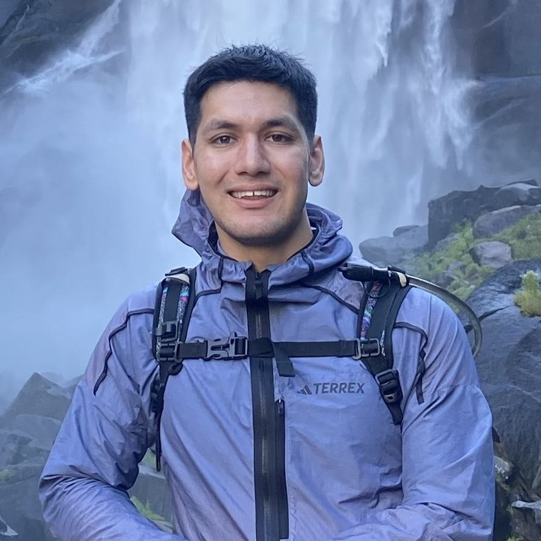

Hello! My name is Brandon, and I am a 4th year CS major at UC Davis. Although I study at Davis, I actually live in Manteca, so I actually commute 3 hours per day to attend classes... fun! When I'm not studying or driving, I like to play guitar, soccer ,run, and workout. Overall, I just really like being active! I'm looking forward to few things this year, like graduation, getting a job, competing in a marathon, and going to EDC for the first time! It's going to be a good year :)